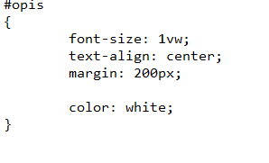
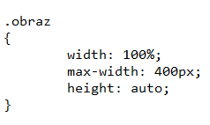
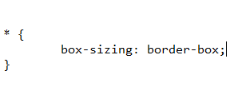

Po co to RWD?
By strona była kompatybilna z różnymi rozmiarami okien i użądzeń.
Dlatego w CSS piszemy:

Wartość
"vw" jest charakterystyczna dla tekstu
powoduje ona że wraz z zwiększaniem okna zwiększa się też tekst.
Obrazkom możemy ustawić ''max-width'' co zpowoduje że będą widoczne i nie za duże

Inną opcją "box-sizing" czyli podział setrony na obszary "pudełka" i skalowanie jej za pomocą procenta wielkości tych pudełek

Więcej informaci